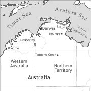

by Eva Schultze-Berndt and Felicity Meakins and Denise Angelo

Kriol is an English-lexifier creole language and the first language of approximately 20,000 Aboriginal people (Sandefur & Harris 1986: 179), a number which is still growing. It is spoken as a chain of dialects in Aboriginal communities across the north of Australia from the Gulf of Carpentaria in the East to the Kimberley area in the West, and from Darwin (North) to Tennant Creek (South). It is not generally found in most of Arnhem Land or the Daly River region. The language name Kriol was introduced by linguists; speakers often refer to the language as English due to the obvious English content in the lexicon as well as the general lack of acknowledgement of the variety in public contexts, services and media, leading to a general lack of awareness both of the name Kriol and of its status as a language of considerable significance.
Kriol, just like other English-lexified pidgin and creole languages of the Pacific, originates in the English-based pidgin used between the first colonizers and the indigenous inhabitants of the Sydney area (Troy 1993; Tryon & Charpentier 2004, Simpson 1996, 2000). From this stage some varieties of Kriol retain lexical items ultimately derived from a nautical jargon such as pikanini ‘child’ and sabi ‘know’, but also lexical items which can be traced to Aboriginal languages of New South Wales, such as binji ‘belly’ and bogi ‘swim’ (Harris 1986: 288). Also found in Kriol are grammatical features attested in early records of the Australian Pidgin, such as the suffix -im on transitive verbs and the nominal suffix -bala (Koch 2000). This pidgin subsequently spread inland and north. Some influence of Chinese Pidgin English is likely, since Chinese by far outnumbered European settlers in the Northern Territory for some years during the 1880s and 1890s (Harris 1986: 172; on this pidgin, see Matthews & Li). The records of the pidgin used in the Northern Territory in the late 19th and early 20th century cited by Harris (1986) bear a close resemblance to Kriol as it is spoken today. A stabilization and standardization of the pidgin in northern Australia was brought about by the need for communication between the increasing numbers of Aboriginal people working on cattle stations, the (primarily) English-speaking pastoralists, and the non-English-speaking (e.g. Chinese) colonists. It would also have been used increasingly for communication between speakers of different indigenous languages, since the new patterns of settlement no longer corresponded to traditional networks of multilingualism, and mobility was considerably increased.
No ultimate agreement has been reached on the process that led to creolization, and consequently on the substrate languages which may have influenced Kriol. Most authors, e.g. Munro (2000: 248) and Harris (1986: 301–316), assume that creolization occurred early in the 20th century at an Anglican mission at Roper River (close to the present-day Ngukurr); for this reason Kriol is often referred to as Roper River Kriol. The mission included a school with a dormitory where children were effectively separated from adults for large parts of the day, needed a common language, and presumably adopted and creolized the existing pidgin. An alternative hypothesis to this abrupt creolization account suggests that the pidgin spoken in the Roper River area had already stabilized and linguistically expanded (Munro 2005: Ch. 2). Consequently, with increasing everyday use of the new contact language, there may not have been a clear-cut distinction between L1 and L2 speakers since many Aboriginal people would have acquired the pidgin/creole language early in their lives alongside a traditional language. World War II, as well as the fact that Aboriginal people were turned away from cattle stations once equal wages were introduced, increased mobility among the indigenous population even further. The use of Kriol as a lingua franca thus gradually replaced the traditional pattern of multilingualism in neighbouring languages, and a large-scale language shift to Kriol began (Munro 2000: 246).
Like the traditional Australian languages in the area, Kriol is mainly used in oral communication and only has a limited role in other domains. An orthography for Kriol has been developed by members of the Summer Institute of Linguistics, and some printed materials, mostly of a religious nature or aimed at children, exist. However, in education and the media, English is used exclusively, except for a bilingual programme at Barunga community established in 1976, which lasted over 20 years. Acrolectal Kriol or English are used by many people, especially younger people, to communicate with outsiders. Interpreting services exist in limited domains such as the court and health services in some regional centres. Official recognition of the status of Kriol is hampered both by negative attitudes of non-indigenous, English-speaking people and the fact that it is perceived as a threat to the traditional languages by indigenous people (Schmidt 1990: 113).
While the Kriol varieties spoken in Ngukurr (Roper River) and Bamyili (Barunga) are the best-described ones (Sandefur 1979, 1991; Sandefur & Sandefur 1982, Graber 1987, Munro 2000, 2005), the existence of regional varieties is discussed by authors such as Glasgow (1984), Hudson (1985), Sandefur (1982b), Sandefur & Harris (1986) and Rhydwen (1993). The possibility that these result from differences in the substrate languages is raised by Munro (2000). On the basis of data from a selection of western, northern and eastern Kriol varieties (acknowledging the existence of at least seven regional varieties), Munro arrives at the conclusion that the differences are small and mainly concern the phonemic inventory (which in any case is subject to register variation), phonetics and prosody, and the lexicon (the latter partly because speakers generally use some words from local traditional languages in Kriol, as can also be seen in the examples below and in the glossed text). Her conclusions are confirmed by our own observations. Most of the grammatical sketch in the subsequent sections is based on the descriptions by Sandefur (1979) and Munro (2005) (Roper River and Barunga Kriol), Angelo (1998) (Roper River and Katherine variety), Hudson (1985) (Kimberley Kriol), as well as our own unpublished materials on the Kriol spoken in Katherine and on a geographically intermediate variety, Westside Kriol spoken in the northern Victoria River District. Examples are taken from spoken and written narratives and conversations wherever possible.
The phonological system of Kriol is not unlike that of many of the indigenous languages spoken in the area. While most of these have between three and five vowels, Kriol has a five-vowel system, with five diphthongs added (Table 1).
| front | central | back | |
| close | i | u | |
| mid | e | o | |
| open | |||
|
Diphthongs: ei ai ou oi au |
|||
The consonant inventory is presented in Table 2 in the practical orthography, with corresponding IPA symbols added where necessary. It distinguishes six places of articulation (plus, in some varieties, an interdental stop) and includes plosives, fricatives, nasals, laterals, a rhotic trill (also realized as a tap), and three approximants. Fricatives are not present in all varieties and registers. Words containing the labiodental fricative f may be realized with the labial stop p instead; similarly, the palatal stop j [c] may replace both the alveolar fricative s and the alveo-palatal fricative sh [ʃ] (consider the alternative realizations joup and soup ‘soap’ in the glossed text). Voicing is not distinctive (although orthographically, voiced stops are often employed representing an allophonic realization). The examples provided throughout this chapter retain the orthographic representation from their source.
|
Table 2. Consonants |
|||||||
|
labial |
inter-dental |
alveolar |
retroflex |
palatal |
velar |
glottal |
|
|
plosive |
p/b |
th* [t̪] |
t/d |
rt [ʈ/ɖ] |
j [c] |
k/g |
|
|
fricative |
f |
s |
sh [ʃ] |
h |
|||
|
nasal |
m |
n |
rn [ɳ] |
ny [ɲ] |
ng [ŋ] |
||
|
lateral |
l |
rl [ɭ] |
ly [ʎ] |
||||
|
trill/tap |
rr [r] |
||||||
|
approximant |
r [ɽ] |
y [j] |
w |
||||
* in some varieties
Kriol phonotactics imposes relatively strict constraints on syllable structure. While syllables can be open or closed, word-initial consonant clusters are limited to combinations of a plosive followed by a liquid, rhotic or glide. The only other type of cluster attested in initial position is a combination of the alveolar fricative followed by a plosive (/st/, /sk/); however, this type of cluster is often reduced to a plosive. According to Sandefur (1979: 40), word-final consonant clusters do not exist in Kriol; however, the combinations /lp/ and /ks/ have been attested (although they too may be reduced); consider elb ‘help’ in example (6) and the reflexive pronoun mijelp.
The Kriol noun phrase consists of a head plus optional modifiers and determiners. Subclasses of nominals which can function as heads are nouns, nominalized adjectives, pronouns, and pronominal demonstratives.
As Table 3 shows, personal pronouns distinguish person (1st, 2nd and 3rd) and number (singular, dual and plural), and further make a distinction between inclusive and exclusive non-singular 1st person, though this is subject to variation. Subject and object pronouns are distinguished in some positions of the paradigm, with regional, but also intra-speaker variation. Kriol has an invariant reflexive pronoun (mijelp), which in the western varieties is identical to the reciprocal pronoun; however, Roper River Kriol distinguishes between reflexive mijelp and reciprocal gija. Possessive pronouns are mostly identical with the subject pronouns except for the first person singular and a number of acrolectal forms; pronominal possessors are also often marked by adpositions (see §5.2 below).
A special feature of Kriol (as well as of its substrate languages and other indigenous languages of the area) is a juxtaposed inclusory construction where a non-singular pronoun is conjoined with a noun phrase whose reference is included in the reference of the pronoun, as in (1). (Underlined words are words from traditional languages.)
|
Table 3. Personal pronouns |
||||
|
Subject |
Object |
Independent pronoun |
Adnominal possessive |
|
|
1sg |
ai, mi1 |
mi |
mi |
main, mi, mai5 |
|
1du.incl |
yunmi1,2,3, minyu4, wi5 |
yunmi |
yunmi |
yunmi |
|
1du.excl |
min(du)bala1,2,3,4, wi5 |
min(du)bala, as4 |
min(du)bala |
min(du)bala |
|
1pl.incl |
minolabat3, wilat4, wi5 |
as4, minolabat |
as, minolabat |
as, minolabat |
|
1pl.excl |
mibala1,2,3,4, wi5, mela(bat)1,2,3,4 |
mibala, as4, mela(bat) |
mibala, mela(bat) |
mibala, mela(bat) |
|
2sg |
yu |
yu |
yu |
yu, yus5 |
|
2du |
yundubala1,2,3,4 |
yundubala |
yundubala |
yundubala |
|
2pl |
yubala3,4, yumob1,2 |
yubala, yumob |
yubala, yumob |
yubala, yumob |
|
3sg |
im ~ i ~ hi5 |
im |
im |
im, is5 |
|
3du |
dubala |
dubala |
dubala |
dubala |
|
3pl |
olabat, ol4, dei5 |
olabat, ol4, dem |
olabat, dem |
olabat, deya5 |
|
refl |
mijelp1,2, jelp4 |
|||
|
recp |
gija1, mijelp2, jelp4 |
|||
1 Roper River, 2 Westside, 3 Barunga, 4 Kimberley, 5 acrolectal form
Kriol demonstratives display a proximal/distal contrast and form three sets (Table 4). While adnominal demonstratives are only used in the function of determiner in a noun phrase, pronominal demonstratives have both a pronominal and an adnominal use (the latter more frequent for the proximal form). The adverbial demonstratives are illustrated in (23) below.
|
Table 4. Demonstratives |
||||
|
Pronominal |
Adnominal |
Adverbial locative |
Adverbial directional |
|
|
proximal SG |
dijan ~ diswan |
dij ~ dis |
hiya |
dijei |
|
PL |
dislot ~ dislat |
dislot ~ dislat |
||
|
distal SG |
tharran ~ jarran ~ jadan |
that ~ jet ~ det |
theya ~ jeya ~ deya |
tharrei |
|
PL |
thatlot ~ jatlot ~ jatlat |
thatlot ~ jatlot ~ jatlat |
||
When used as determiners, demonstratives usually precede the head noun. In the adnominal set, only the proximal form has a spatial deictic value; the form corresponding to the pronominal distal form, that ~ jet ~ det, functions in a very similar fashion to a definite article (as well as being used for text deixis). While it is very frequent, it is not used obligatorily in all definite contexts, but only if the identification of the referent is actually at stake and/or the referent is topical (Nicholls 2010). It also occurs with generic NPs and inherently definite NPs such as proper names. The use of the demonstrative determiners is illustrated in (2) (see also examples (18) and (20)).
The determiner wan, identical to the numeral ‘one’, can be considered an indefinite article, although again, it is not obligatory in indefinite contexts. Sandefur (1979: 104) considers it a marker of indefinite specificity, having the sense of ‘a certain’ (see example (6)).
Number marking is variable in Kriol. It is the norm with human nouns and rare with inanimates, but not obligatory in either context. Plural-marked nouns do not co-occur with numeral quantification. Plurality is usually marked by a special plural determiner ola (and variants) as illustrated in (4), or by the plural suffix -lot ~ -lat on demonstratives (see Table 4). Reduplication to express plurality is only found with a subset of human nouns, and with modifying adjectives regardless of the animacy of the referent, as in (4).
Kriol also has a collective plural suffix ‑mob, usually only found in noun phrases with human reference. The host noun can be a kin term, a place name, a group designation (c.f. 3) or a demonstrative. It can also be a proper noun, in which case the resulting noun has an associative plural reading (‘X and others associated with him/her’).
In all varieties, the most frequent word order of adjective and noun in the noun phrase is adjective-noun, but the reverse order is also attested, as shown in (4). Most adjectives in Kriol take one of the two suffixes -wan (general) or -bala (only in NPs with animate reference, numerals and in some lexicalized expressions), which can also be used to derive adjectives from nouns. Numerals likewise precede the noun.
The possessor in an adnominal possessive construction can either be a juxtaposed pronoun or proper noun (Munro 2005: 180), or an adpositional phrase (see §5.2 below). These constructions are used for both alienable and inalienable relationships. Both possessor-possessum and possessum-possessor orders are attested; the former is illustrated in (5).
Kriol prepositions and their functions are listed in Table 5. Prepositional phrases function as locative, benefactive and instrumental/comitative adjuncts (see examples (6), (11), (28) and the glossed text), as prepositional objects e.g. of ‘give’ verbs and perception verbs (see examples (21) and (19)), and as predicates in verbless clauses (see example (16)). The dative marker also functions as a marker of non-finite purposive clauses (see §8.4).
An adnominal use is only attested for dative adpositional phrases in possessive constructions. The prepositional adnominal possessive construction is illustrated in (18) (in the order possessor-possessum) and in (21) (in the order possessum-possessor). Exceptionally, the dative marker in this function can also appear as a postposition. This structure appears to be more frequent in the Western varieties, and among younger speakers. Hudson (1983: 71) claims that it is the result of substrate influence from the surrounding traditional languages which mark possession using a dative case suffix on the possessor. A postpositional phrase is illustrated in (7).
|
Table 5. Prepositions |
||
Category |
Forms |
Functions |
|
location |
la, langa, na, nanga |
location, goal, recipient, addressee, object of some perception verbs |
|
source |
burrum1, brom, from4 |
movement away, consecutive action |
|
dative |
blanga, bla, ba5, blanganda4, fo4, bo |
possessive (also as postposition), benefactive, purposive |
|
associative |
garram, gat, garra |
instrument, accompaniment, mode of transport |
1 Roper River, 2 Westside, 3 Barunga, 4 Westside (younger speakers) and Kimberley, 5 Katherine region
In Kriol, tense, aspect and mood marking is achieved by means of preverbal auxiliaries or particles (see §6.2 below). Verb morphology is limited to reduplication, an invariant suffix -im ~ -i on most transitive verbs, a number of “adverbial suffixes” (listed in Table 6) with mainly spatial/directional meanings, and a progressive aspectual suffix ‑(a)bat. Their order is V-tr-adv-prog, as illustrated in (8). The transitive marker is derivational, in that it can create transitive verbs from intransitive verbs (e.g. ran ‘run’ > ranim ‘run into’, weik ‘be awake’ > weikim ‘wake s.o.’), and also from nouns (e.g. totj ‘torch’ > totjim ‘set alight’) (Hudson 1985: 38; Meyerhoff 1996).
A second progressive suffix ‑in ~ ‑ing only appears on intransitive stems and precedes any adverbial suffix, as shown in (9). If one considers the adverbial suffixes derivational based on their meaning, this position could be regarded as evidence for the derivational (or in fact, lexicalized/frozen) status of ‑in ~ ‑ing.
In fact, the more productive ‑(a)bat marker could also be considered a derivational marker of lexical aspect (aktionsart) rather than an inflectional suffix. It is linked to verbal pluractionality and plurality of participants (e.g. Hudson 1985: 40–41) and is often labelled “continuous” or “iterative” in descriptions of Kriol.
Reduplication of the verb, likewise, indicates iteration or duration of an event, but also plurality of participants. The first function is illustrated in (6) above; plurality of participants is illustrated by katim-katim in the glossed text. These examples also show that reduplicated forms include the transitive marker and any adverbial suffix in the reduplicant; this constitutes additional evidence for the derivational status of these suffixes (the progressive marker, however, is not reduplicated, e.g. jendap-jendap-bat ‘be standing up’). Reduplication may co-occur not only with the progressive marker but also with preverbal particles marking imperfectivity and habituality (see §6.2).
|
Table 6. Adverbial suffixes on verbs |
|||
|
Form |
English etymon |
Function |
Examples |
|
-an1 |
on |
spatial meaning on verbs of manipulation |
putiman ‘put s.th. on’ |
|
-ap |
up |
spatial meaning on verbs of motion and manipulation, also marks telicity on some verbs of goal orientation |
klaimap ‘climb up’, kamap ‘move towards deictic centre’, falarimap/gadjimap ‘catch up’, kaburrumap ‘cover up’, draundimap ‘drown s.th. completely’ |
|
-(a)ran |
around |
spatial meaning, mostly on verbs of motion |
wokaran ‘walk around’, lukaran ‘look around’ |
|
-(a)wei |
away |
spatial meaning on verbs of motion |
ranawei ‘run away’, andimwei ‘hunt s.o. away’ |
|
-at |
out, at |
spatial meaning, also marks telicity on some verbs of completion |
kamat ‘come out’, teikimat ‘take out’, wetinimat ‘extinguish’, lukinat ‘look at, watch’ |
|
-bek |
back |
spatial meaning of return; also retaliation or reciprocation |
ranbek ‘run back’, kambek ‘return’, shainimbek ‘shine a light back at someone’ |
|
-dan |
down |
Spatial meaning; also cessative meaning |
randan ‘run down(wards)’, boldan ‘fall’, nakimdan ‘knock over’, breikdan ‘break down’ |
|
-oba ~ ova4 |
over |
Spatial meaning, also indicates disapproval |
guwoba ‘go over’, jampoba ‘disregard, bypass’, teikoba ‘take over (unjustly)’ |
|
-op ~ ap |
off |
Spatial meaning: separation |
jampof ‘jump off’, gidof ‘get off, dismount’ |
1 Roper River and Barunga Kriol, 4 reported for Kimberley Kriol
The core of the Kriol verb complex maximally consists of a tense marker1, an aspectual/modal2 auxiliary or particle, a phase marker or adverbial3 and the main verb5 which may be (albeit rarely) preceded by a function verb4 in a serial verb construction. These appear in fixed order, as illustrated in (10). An overview of all preverbal markers is provided in Table 7.
The only tense marker, bin, marks past tense; present tense is unmarked. Two habitual markers coexist in all Kriol varieties, oldei/olwei (and variants), which can be combined with the past tense marker (as in (10)), and yusda (and variants), which always has past time reference and is not compatible with bin. Verbal quantifiers and other adverbials can appear within the verb complex, e.g. ol ‘all’ in (19).
Markers with future time reference also have a modal meaning. For the auxiliary garra (and variants), shown in (17), this is a meaning of obligation. Wana (and variants), illustrated in (12) and (28), has a desiderative, optative or potential meaning, and, unlike garra, is also compatible with the past tense marker.
Other preverbal modal markers include labda, which expresses deontic necessity and also co-occurs with the past tense marker as shown in (11).
Additional modal markers occur in sentence-initial position, e.g. masbi marking epistemic necessity (‘must’).
|
Table 7. Preverbal Tense-Aspect-Mood markers. A dash (–) in the position 1 column indicates incompatibility of the position 2 marker with the past tense marker. |
|||||
|
Position 1: Tense |
Position 2: Modality/ Aspect |
Position 3: Phase etc. |
Position 4: Voice |
English etymon |
Function |
|
bin, -in |
been |
past |
|||
|
-l5 |
I’ll, will |
future |
|||
|
oldei, olwei(s) ~ olas4, ala ~ ola |
all day, always |
continuative, habitual |
|||
|
– |
yusdu ~ yusta |
used to |
past habitual |
||
|
wana ~ wanda4 ~ andi1, a |
want to |
desiderative, optative, future |
|||
|
labta ~ labda ~ lafta ~ lafda |
(will) have to |
necessative |
|||
|
– |
garra ~ -rra ~ gata ~ gota |
got to |
potential, obligation, future |
||
|
– |
beta |
(had) better |
necessative |
||
|
– |
gin ~ ken |
can |
ability |
||
|
– |
shudbi, shuda |
should (have) |
counterfactual |
||
|
trai1, trainda4 |
try(ing to) |
attempt |
|||
|
stil |
still |
continuation |
|||
|
jas |
just |
limitation |
|||
|
stat |
start |
inceptive |
|||
|
stap |
stop |
cessative |
|||
|
kip1,4, kipgon4 |
keep going |
durative |
|||
|
nili, gulijap1 |
nearly, close up |
‘almost’ |
|||
|
git |
get |
passive |
|||
1 Roper River and Barunga Kriol, 4 Kimberley Kriol, 5 Only combines with 1st person pronouns ai and wi (Hudson 1985: 30)
6.3 Negation
Clausal negation is achieved by one of two invariable negative particles, no(mo) and neba ~ neva, which immediately precede any other element of the verbal complex. The difference between the negators is poorly understood and seems to vary according to region and also according to age (Hudson 1985: 32). In Roper River Kriol and in the speech of older people in the Victoria River region, nomo, illustrated in (12) and (29), is the more general negative marker and is also used in prohibitive contexts.
In Westside Kriol, neba ~ neva is only used with past reference, either in past habitual contexts or in past contexts with relevance at speaking time. (Note that negation is not compatible with the past habitual marker yusdu ~ yustu.)
In certain negative contexts, specific markers are employed which have English negative auxiliaries as source items. These are din (< didn’t) as infrequent, acrolectal alternative to the general negator and past tense marker, don (< don’t) in prohibitive function, and kan (< can’t) marking negative ability.
6.4 Serial verbs
Serial verb constructions in Kriol are limited to a few types involving either continuative, causative or motion verbs in first position (Meakins 2010: 21). A continuative serial verb construction involving jidan ‘sit, be, stay’ as V1 is illustrated in (14); motion serial verb constructions in a purposive or sequential function are shown in (10) and (12); another example is kam getim ‘come and get’ in the third last line of the glossed text.
Kriol has a number of verbless clause types with nominal or adjectival predicates which in present tense do not require a copula; past tense is marked with bin just as in verbal clauses. According to Sandefur (1979: 123), the copula bi occurs in the future tense, but this is not attested in any other available data (cf. also Hudson 1985: 90, who however regards bi as an acrolectal feature).
Ascriptive and equative clauses consist of a subject noun phrase and either an adjectival or a nominal predicate.
Locative clauses combine a subject noun phrase with a prepositional phrase serving as predicate. They can be verbless, as in (16), or feature stative verbs like stap ‘live, stay’ or jidan ‘sit, be, stay’ which could be said to be taking on a copula-like function (17) (compare also (14)).
A verbal clause consists of a predicate, the verb, and noun phrases or prepositional phrases which serve as arguments (subject, object, or indirect object), or adjuncts. Intransitive clauses consist of a subject and the verb; adjuncts may be added to express the location or time of the event. Subject pronouns in Kriol are generally obligatory in independent clauses in the absence of a full NP subject, except in imperatives. Examples (6) and (11) above illustrate intransitive clauses.
Transitive clauses consist of a subject, verb and object where grammatical relations are indicated by word order, the unmarked order being SVO (see e.g. (2), (4), (13), and (18)).
Semi-transitive clauses involve a prepositional phrase rather than an unmarked NP as the object. Most frequently, the verb is one of speaking or perception, and the prepositional object is marked with the locative preposition la(nga), as in (19).
A small group of verbs (including ‘give’) head ditransitive clauses. The first type of ditransitive clause is a double object construction where theme and recipient are both unmarked (cf. 20). In the second type, the recipient is encoded by a prepositional phrase with the locative preposition la(nga) as in (21). These variants pattern in much the same way as English. The order is generally recipient–theme.
Passive clauses are formed by combining the grammatical verb get ~ git with a form of the lexical verb which lacks the transitive suffix and often appears to be a frozen form of the corresponding English participle, a form which does not occur in any other construction (Sandefur 1979: 137; Hudson 1985: 106). The agent, if overtly expressed, is demoted to an adjunct prepositional phrase marked by the source preposition brom. Apart from the agent prepositional phrase, the construction is analogous to the adjectival inchoative construction which also involves get ~ git, as in git kwait ‘become quiet’.
Existential clauses involve the verb meaning ‘have’, got ~ gatim ~ gata ~ garram, in combination with an expletive subject. (Note however that Hudson (1985: 92–93) identifies the form garra(m) with the instrumental/comitative preposition and treats these as verbless clauses).
Polar questions are not marked by segmental means or by word order. Impressionistically there is a prosodic difference between declarative and interrogative clauses, but the prosody of Kriol varieties has not been described.
The word order can be changed in order to indicate specific types of information structure. For example, contrastive object focus may result in object-initial word order (an example is soup ai bin meikim ‘soap (is what) I made’ in the glossed text). Similarly, interrogative phrases in information questions are usually fronted, as in (24) (although in situ interrogative phrases also occur).
Topicalized structures are frequent in Kriol. The topic constituent can be left-dislocated or right-dislocated, and is invariably represented by a coreferential pronoun in the core clause (Hudson 1985: 78, Nicholls 2010). Left-dislocated topics are often subjects, in which case the word order is still SVO, but the construction can be recognized because of the coreferential pronoun, as in (2), (3), (15), (18), and (20). Example (24) illustrates a right-dislocated topic/subject (dijan dog).
The most frequent equivalent of a relative clause in Kriol is probably most adequately described as an adjoined relative clause or general subordinate clause (as is the case for some of the traditional languages of the area). It is marked by we ~ weya and can receive either a modifying or a temporal or spatial interpretation. In modifying function, it can also be separated from its (semantic) head noun, as shown in (25), although in most instances it immediately follows it. Less frequent is a relative clause construction without subordinator, immediately following the head noun. Both types of relative clause contain a resumptive pronoun which is coreferential with the head noun.
Complement clauses of reken in the sense of ‘think’ (or as a speech verb) and of wantim ‘want (something)’ do not take a complementizer. The latter are rare and possibly acrolectal. Speech verbs usually take direct speech complements.
Clausal coordination is achieved, like in English, by a conjunction preceding the second clause. Conjunctions are coordinating an ~ en ‘and’ (see 24), disjunctive o ‘or’, and adversative bat ‘but’ or ani (< English only); the latter is illustrated in (27).
Finite adverbial subordinate clauses are preceded by a conjunction (Table 8) with no change in word order in the subordinate clause (examples (28) and (29)). In non-finite adverbial clauses, the subject is deleted and understood to be coreferential with the subject of the main clause, as illustrated by the purposive clause (introduced by bla) in (28).
|
Table 8. Conjunctions used in finite adverbial subordination |
||
|
Form |
English etymon |
Function |
|
dumaji |
too much |
causal |
|
bikos |
because |
causal |
|
ib |
if |
conditional |
|
buji |
suppose |
conditional |
|
wen |
when |
temporal |
|
we(ya) |
where |
locative (also relative clause) |
Coherence in discourse is often achieved in other ways than syntactic coordination or subordination. For example, temporal precedence (‘after’, ‘before’) is usually expressed by lexical means in juxtaposed clauses, not by subordination, as in (30). Conditionality can be expressed by juxtaposition with rising intonation in the first clause and falling intonation in the second; this is the prosodic contour of (31).
Sequences of events can be expressed by juxtaposed clauses where the subject can be deleted if co-referent with the previous subject. Sequentiality of events, but also topic shift is also frequently indicated by the particle na (Graber 1987). Both phenomena are amply illustrated in the glossed text.